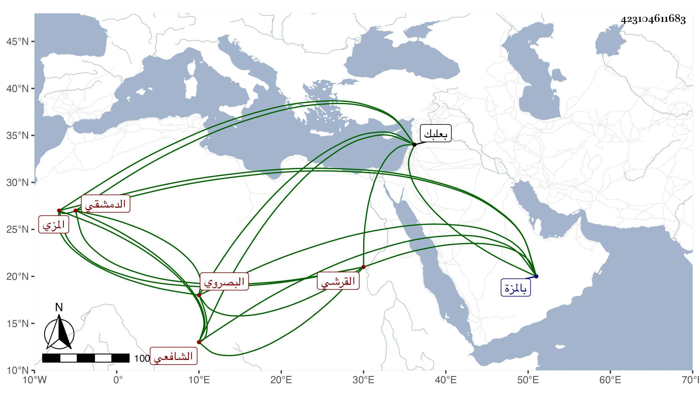

0902Sakhawi.DawLamic.ITO20230111-ara1.EIS1600.423104611683
Biography ID: 423104611683
إبراهيم بن عبد الوهاب بن إسماعيل بن عمر بن كثير بن ضوء بن درع برهان الدين أبو إسحاق بن المسند التاج بن الحافظ العماد القرشي البصروي الدمشقي المزي الشافعي الآتي أبوه ويعرف كسلفه بابن كثير . ولد في سنة تسع وثمانين وسبعمائة ببعلبك ونشأ بها وأحضر في الثالثة على ابنة عم والده ست القضاة أم عيسى ابنة عبد الوهاب بن عمر بن كثير كتاب السنة لأبي الحسين محمد بن حامد بن السري خال ولد البستي لقيته بالمزة وهو من بيت علم وحديث فقرأت عليه جزا ومات .
